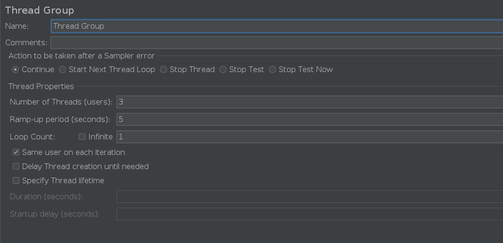
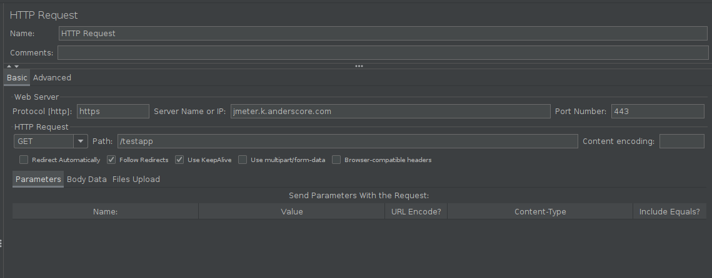

open source, 100% Java Lasttest-Werkzeug
Ursprünglich zum Testen von Web Applikationen
Testpläne zur genaueren Spezifikation
HTTP, HTTPS, FTP, SOAP, JDBC Requests möglich
Entwickelt von Apache Software Foundation
Alternativen:
Lektion 1 - Einführung
Kochrezept für eine Messung
Herausforderung und Ziel beschreiben
Messgrößen auswählen (d.h. Metriken, Key Performance Indicators (KPI))
Messaufbau festlegen
Methodik definieren
Daten sammeln
Ergebnisse präsentieren und interpretieren
1. Herausforderung und Ziel beschreiben
Klare Fragestellung für die Messung - Zum Beispiel:
Wie viele Server werden für eine Webanwendung benötigt?
Reagieren SAP & Co. schnell genug, oder benötigt das Frontend einen Cache?
Wird unser System im Betrieb überlastet?
Können wir entsprechend der Nachfrage skalieren?
Warum braucht das Laden der Homepage > 3 Sekunden?
Wichtig: Verschiedene Fragen ‚áí verschiedene Messungen
2. Messgrößen auswählen
Welche Werte beschreiben die Performance oder die Last? - Zum Beispiel:
Ladezeit einer Seite in Millisekunden (ms) am Client
Aufbauzeit einer Seite im Browser (nicht mit JMeter üò•)
Ressourcen-Verbrauch auf dem Server (CPU, RAM, I/O)
Netzwerklatenz (Ping RTT, TCP RTT)
Netzwerklast bzw. freie Kapazität
Leistungsdaten der Anwendung (Queries im OR-Mapper, Laufzeit Template, JSON, XML, etc.)
Wichtig:
Häufig: Mehr als eine Größe relevant
Ressourcen-Verbrauch überwachen ⇒ nicht über 80%
3. Messaufbau festlegen
Wo wird gemessen?
In der kompletten Anwendungslandschaft?
Nur einzelne Anwendungen / Services?
Wie sieht das Deployment aus?
Last definieren - zum Beispiel:
Es bewegen sich immer 100 User im System (closed model), 1 Seitenaufruf alle ⌀ 1.5s
Die User-Zahl steigt an (open model)
Wichtig:
Aufbau muss zur Fragestellung passen
Je komplexer der Aufbau, desto schwieriger die Interpretation
Aufbau verifizieren (z.b. kann die Last erzeugt werden?)
4. Methodik festlegen
Wie wird gemessen - welche Software wird verwendet?
Mit JMeter!
Monitoring Server / Netzwerk
DevOps-Stack (Grafana, InfluxDB, Promotheus, Micrometer, …) h√§ufig notwendig
Wichtig:
JMeter überwacht den Versuch (z.T. assertions)
JMeter als alleiniges Tool: Wenig Aussage
5. Daten sammeln
JMeter starten
Ausgabe überwachen
Wichtig:
Alle Daten sichern
6. Ergebnisse präsentieren und interpretieren
Häufig keine Normalverteilung - Beispiele
Rest-API: Verschiedene URLs dauern unterschiedlich lang
Zwei Server im Cluster, verschiedene Regionen (Asien, Europa), unterschiedlich Latenz
Virtuelle Maschine (Cloud Hoster): Effekte durch andere Kunden
Was bedeutet das?
Mittelwert, Median, Standardabweichung, etc. nur beschränkt hilfreich
H√§ufig: Verschiedene Normalverteilungen √ºberlagert (Load-Balancing, Bias, …)
Hilfreiche Graphen:
Scatter-Plot
Kumulierte Dichte (empirisch / CDF)
Beispiel: Scatter-Plot
Beispiel: Kumulierte Dichte (empirical CDF)

Kochrezept für eine Messung
Fragen?
Zurück zu JMeter
Was ist Apache JMeter?

Apache JMeter Releases
Datum | Version | Neuigkeit |
12/1998 | 1.0 | Offizieller Release |
05/2016 | 3.0 | Java 7, Report Improvements, Graphs |
02/2018 | 4.0 | Java 9, Boundary Extractor, JSON Assertion, Precise Throughput Timer |
09/2018 | 5.0 | Files Upload, Live Reporting and Web Report |
02/2019 | 5.1 | Set init SQL via JDBC, JDBC QueryTimeout |
11/2019 | 5.2 | Pre-initialize connection pool in JDBC, fetch only a certain number of rows |
05/2020 | 5.3 | Dark Theme, many UX improvements |
12/2020 | 5.4 | Exclude embedded URLs, GraphQL/HTTP Request Sampler, InfluxDB BackendListener |
12/2021 | 5.4.3 | Apache log4j2 fix release |
06/2022 | 5.5 | Java 17, log4j2 2.17.2, Open Model Thread Group |
Introducing Apache JMeter: an open source, 100% pure Java load test application
Performancetests auf Web Applikationen
statische und dynamische Ressourcen ansprechbar
Simulation starker Auslastung gegen
Server / Servergruppen
Netzwerk
einzelne Objekte
Begriffsklärung: Performancetests / Lasttests
- Performancetests
Wie gut und schnell reagiert die Anwendung?
Simulation normaler Last
Messung in JMeter
- Lasttests
Wie reagiert der Server auf große Last?
Simulation starker Last
Betrachtung des Servers
JMeter testet: End-to-End (E2E) Tests
Was deckt ein End-to-End Test ab?
Netzwerk (verschiedene Protokolle)
Server-Hardware, Betriebssystem
Middleware (z.B. JMS, Kafka, Application-Server)
Anwendungscode (& Logik)
Darstellung (z.B. HTML)
Protokolle
- Tests mit verschiedenen Protokollen möglich
Web - HTTP, HTTPS (Java, NodeJS, PHP, ASP.NET, …)
SOAP / REST Webservices
FTP
Database via JDBC
LDAP
Message-oriented middleware (MOM) via JMS
Mail - SMTP(S), POP3(S) and IMAP(S)
GUI mode

IDE mit allen Features
einfache und schnelle Erstellung von Testplänen
recording, building, debugging
CLI mode
Ohne grafische GUI
Effizientes Ausführen der Lasttests
jmeter -n -t test.jmx -e -o result.jtlHTML Reports
- vollständige HTML Darstellung aller Ergebnisse
Tabellen
Graphen
Typischer Ablauf

Bootstrapping
Archiv entpacken
tar -xvzf apache-jmeter-5.5.tgzOrdner wechseln
cd apache-jmeter-5.5JMeter starten (GUI-mode)
./bin/jmeter
Verwendeter Webserver
E-Mail Adresse: beliebige Eingabe (In Session gespeichert)
Kennwort: secret
Hello World: Thread Group erstellen
bestimmt den User Workflow
Simuliert das Verhalten von User bei Benutzung der App
Jeder einzelne Thread repräsentiert einen User
Hello World: Thread Group konfiguriern
Name - Name zur Identifikation
Number of Threads - Anzahl der User
Ramp-up Period - Alle x Sekunden kommt ein neuer User hinzu
Loop Count - Wiederholungen des Tests

Hello World: Sampler hinzufügen
Sendet Requests an den Server, wartet auf Responses
[HTTP Request] zum Ansprechen der REST-App

Hello World: Sampler konfigurieren
Name: Name zur Identifikation
Server Name or IP: Anzusprechender Host
Port Number: Port des Hosts
HTTP Request: Weitere Parameter zum Request (z.B. Pfad, Methode, …)

Hello World: Timer hinzufügen
Pausen zwischen Anfragen
Angabe in Millisekunden
Hier 300 ms
Hello World: Listener hinzufügen
Sammelt Responses und speichert diese
Sammelt auch Logging und Debugging Informationen
Zeigt die Ergebnisse an
Hello World: Performancetest starten
Mit Klick auf 'start' wird der Testplan ausgeführt
Ausführung über GUI für große Anwendungen nicht empfohlen
Alternative:
./jmeter -n -t hello-world.jmx -e -l hello-world.jtl -o hello-world

Hello World: Ergebnisse anschauen
Klick auf 'View Results Tree' zeigt die gesammelten Daten
Alle Ergebnisse einsehbar
Aufgabe 1.1 - JMeter Grundlagen
Aufgabe 1.1 - JMeter Grundlagen
Erarbeiten Sie sich das Hello World Beispiel
Laden Sie sich JMeter herunter
Starten Sie JMeter
Erstellen Sie einen Performancetest gegen den gezeigten Server https://jmeter.k.anderscore.com/testapp/
Analysieren Sie das Ergebnis.
HTML Report
Darstellung aller Ergebnisse als HTML

GUI Mode
Unter Tools → Generate HTML report
Angabe von Results file, user.properties und output directory

CLI Mode
Parameter "o" gefolgt vom output directory
./jmeter -n -t hello-world.jmx -e -l hello-world.jtl -o hello-world